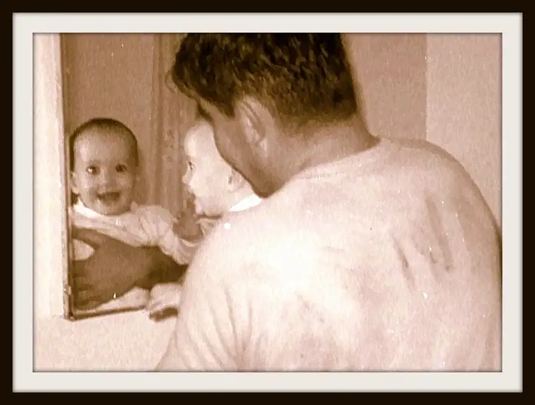

“The power of the father to bestow identity onto his child is extraordinary.” – The Father Effect documentary

This is one of my favorite pictures of Dad and me. It’s not the best quality, and you can’t even see Dad’s face, though you can make out that he’s smiling, and his broad shoulders are prominent, along with his dirty sweatshirt that shows he’d been doing some grunge work prior to this moment.
I don’t know how it all came to be but what I do know is that Dad was a playful guy, especially in our earliest years. As the youngest boy of nine kids, he’d always been drawn to children, and worked for a while as a babysitter in his teen years. He decided, after some time pursuing the priesthood, to go into teaching instead, and give married life a try.
My father wasn’t perfect. He struggled for many years with alcoholism, and, I suppose, there was a bit of depression mixed in there as well. He squandered many opportunities at being something great — he had many talents — slipping into a life of mediocrity at best, and survival the other days.
Most might not have called him successful in the world’s eyes, though in the end, he was successful at what counted most in my opinion — loving us. Despite his sometimes elusive presence, he was present, and gave what he could. When he passed four years ago, there were no lingering doubts about whether he loved me. I knew.
Losing him made me keenly aware of what an important presence he’d been in my life. I’m sure I always knew it on some level, but until I actually experienced the loss of him, I don’t think I understood just how significant a space he’d taken up in my heart.
And I know I’m far from being alone in my sentiment. Dads are an incredibly significant force in the lives of their children. Studies have proven it, but we don’t need statistics to know how affected we are by our fathers, and how deep the wounds go when they don’t show up.
Our prison systems are crowded with men whose fathers either rarely came around in their childhood, or plain old never showed up at all. It’s a heart-wrenching story that has played out over and over again in the lives of countless kids. And it doesn’t take too much pondering to conclude that when a father is missing from a child’s life, that child enters the world with a deficit. The lack of a fatherly role model for boys leads to men who feel inept at fathering, and the sad pattern continues. The implications for our society are absolutely crushing.
The importance of fathers and the tragic effects of fatherless-ness first came to my heightened attention several years ago while working on a project with Bill May of Catholics for the Common Good. Bill has studied the erosion of marriage and family, and has in hand some pretty alarming statistics about fatherless-ness.
As he notes here, in defending marriage: “Today, there are too many fatherless children with tragic human consequences. Half of children born to women under 30 are outside marriage — and 71% of high school drop outs, 85% children with behavioral disorders, 63% youth suicides, 71% teen pregnancies, 70% juveniles in state rehab, 90% of homeless and runaway children are all from fatherless homes. How can anyone justify eliminating this institution?”
Holding all this in my heart, when I saw a documentary called “The Father Effect” advertised on the Eternal World Television Network before Christmas, I made a date with myself, and watched it. I’m glad I did.
From that came this:
- “Nine out of 10 of us have a father-wound.”
- “A real man cries for his father-wounds.”
- “A father is a child’s first conduit to God.” (Dr. Meg Meeker)
- “If a daughter knows she has her dad’s love, life makes sense to her.” (Dr. Meg Meeker)
These were just some I happened to jot down. Each merits reflection. They jumped out at me not because I had suddenly discovered something new, but because deep down, I already knew them to be true.
And then came this article, a Reuters piece about transgender children, and how parents in the U.S. are now accepting their children’s sexual identity as early as age 3. I tried reading with an open mind and heart, but by the end of the article, the nagging questions would not leave. Perhaps the most important: “Where is the father?” There is no sign of him. We know he exists. He has to. And yet, nothing.
The world seems bent on normalizing this topic, all in the name of love of course, but my gut and my reason both tell me something is very off. I’m not trying to suppress reality. I’m trying to keep it visible. “The power of the father to bestow identity onto his child is extraordinary.” If this is true, and it sure rings true to me, we can’t leave out the father.
The elephant in this room? The missing father. The missing role model. The missing significant force in a child’s life. Maybe there’s a completely legitimate reason for the fact that this piece says nothing about this child’s dad. Maybe he couldn’t be there the day of the interview. But shouldn’t he still figure into the equation somehow?
Another child mentioned within is also referenced only in terms of the mother’s opinion, although a dad is noted as existing. But again, where’s dad? Once he is found, I would naturally want to hear from him, and also, find out a bit about his childhood, and his relationship with his father. Because I would bet money on the possibility that somewhere in this family line, there’s been a disruption of healthy father-child relationships.
I share my thoughts out of concern, out of love for these children and the brokenness in families. I come from a family with its share of brokenness, too. Few of us (maybe no one) can claim being untouched by at least some family dysfunction. But does that give us reason to just ignore the elephant? Shouldn’t we be asking a few more questions than whether the kid likes blue or pink best?
Maybe there’s something here that we’re overlooking. I think it’s worth exploring.
I don’t have all the answers, but I do have a few suggestions.
- Get your hands on a copy of “The Father Effect.” It’s now available in DVD or download.
- If you didn’t have the best role model in your own parents, or don’t feel you’re the best role mode for your kids, don’t despair. The Father of All also happens to be the Great Healer. It’s not too late to seek that healing, and determine to do the best you can while you heal. Today is as good a place as any to start.
- If your Dad is still alive, no matter what your relationship has been like…find him, and give him a hug. No, he isn’t, and hasn’t been, perfect, but tell him you love him anyway. And then show it somehow.
Fathers are important and we need to encourage dads. That’s what “The Father Effect” is all about; there is much reason to hope.
My father died on Jan. 11, 2013, and though I cannot hug him, you can be bet he’s close to my heart. I write this post in memory of him, and with gratitude for all of the fatherly love he bestowed on me, and also, for being the first one to show me who I was all those years ago.
Q4U: Have you hugged your father today?